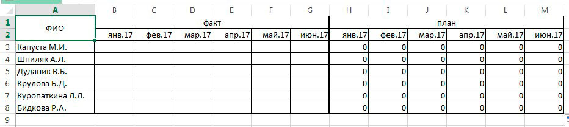
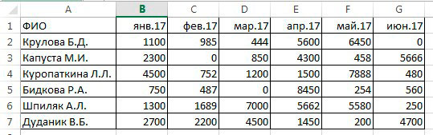
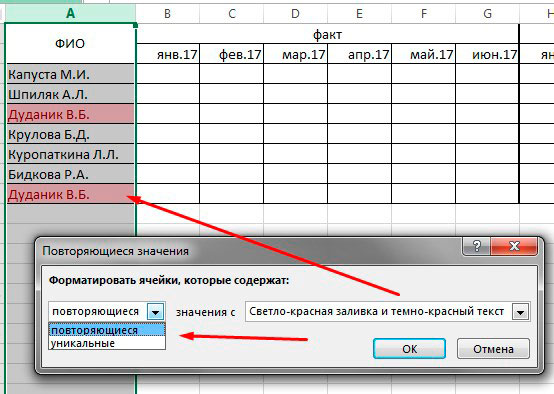
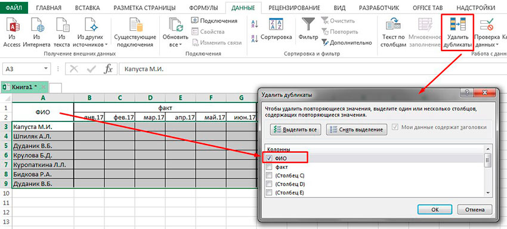
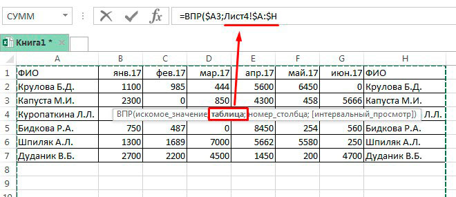

Знаменитая функция ВПР
Я расскажу о тонкостях и небольших особенностях использования функции ВПР (в английском варианте VLOOKUP) на одном примере. У нас есть таблица, в которой мы расчитываем план по сотрудникам по формуле "факт + 12%" (см. табл.1). Данные с фактом выполнения у нас находятся в другой таблице (табл.2). При этом, ФИО идут не по порядку. Задача перенести факт продаж в столбцах из таблицы 2 в таблицу 1.

табл.1

табл.2
Важно!
Функция производит поиск по столбцам. Если необходимо провести поиск по строкам, есть аналогичная функция ГПР.
Функция ВПР отрабатывает корректно только в том случае, когда есть совпадающие уникальные данные в обеих таблицах. Расскажу по порядку. В графе ФИО есть фамилии в обеих таблицах. Это наш якорь, за который будем цеплять данные. Если в таблице 1 будет фамилия, например, Коздик П.А., а в таблице 2 (откуда мы берем исходные данные), такой фамилии нет, соответственно вместо данных в первой таблице мы получим "#Н/Д".
Эти фамилии (в других примерах, любые другие данные от цифр до дат) должны быть уникальными, то есть неповторяющимися. В противном случае, ВПР подтянет данные по первому совпадающему значению, проигнорировав второе. Например, в таблице 2 есть два одинаковых ФИО "Кириллов Б.А." (то есть, полностью идентичные), но с разными данными в ячейках "факт". При использовании ВПР в первой таблице подтянуться данные только первого Кириллова Б.А. А данные по второму Кириллову будут проигнорированы. Соответственно, если значения, на которые вы будете опираться, не уникальны, ВПР Вам не поможет. Обратите внимание, что значения должны точно совпадать, учитывая пробелы. Например, в ФИО первой таблицы Фамилии начинаются с буквы, а во второй таблице перед первой буквой фамилии стоит пробел, то такие значения совпадать не будут.
Кстати, как проверить, есть ли повторяющиеся значения в ячейках? Очень просто! Выделяете столбик со значениями. В меню "Главное" нажимаете на "Условное форматирование". В нем выбираете "Правила выделения ячеек" и там "Повторяющиеся значения".

Программа предложит Вам выбрать каким цветом будут подсвечены повторяющиеся значения. Также, вместо повторяющихся, вы можете выделить уникальные значения.

А если среди множества данных Вам нужно удалить повторяющиеся значения? Например, Вы точно уверены, что все строки у таких данных совпадают. И дубликаты нужно просто удалить. В этом случае, условное форматирование не очень эффективно. Если выбрать под фильтром все выделенные строки и удалить, то мы избавимся не только от дубликатов, но и от уникальных значений. А нам нужно оставить, к примеру, из трех повторяющихся одно значение. На помощь приходит отличная кнопочка "удалить дубликаты". Перед этим мы выделяем всю таблицу!!! Если в таблице есть объедененные ячейки, то удалить дубликаты не получится. Нужно либо снимать объединение, либо, как в моем случае (объеденные ячейки находятся в шапке таблицы) просто исключить из выделения. Далее, переходим на вкладку "данные". В ней кликаем по "удалить дубликаты". В новом окне я выбираем столбец А с повторяющимися значениями. Нажимаем ОК. И программа сообщает о том, сколько было удалено дубликатов и количество уникальных значений. Таким образом, всего за несколько секунд мы избавились от строк, которые мешают ВПР.

Вернемся к нашей функции. Еще стоит помнить об одном моменте. Когда Вы выбираете исходную таблицу, уникальные значения должны быть первым столбцом в выделении. То есть, даже если в таблице 2 перед ФИО идут дургие столбцы, например, порядковый номер, должность и прочее, то при выборе исходной таблицы, вы выделяете, начинаяя с ФИО!!! В противном случае, ВПР откажется работать. А также, формат данных ФИО в обеих таблицах должен совпадать. Например, если в столбце ФИО таблицы 1 формат числовой, а в таблице 2 текстовый, то ВПР выдаст ошибку.
Разберем структуру функции и ее параметры
=ВПР(искомое значение;таблица;номер_столбца;[интервальный просмотр])
Искомое значение - тот самый уникальный якорь. В нашем примере (пишем формулу в ячейке B3 таблицы 1) искомое значение А3. Сразу предвидим, будем ли мы протягивать формулу по горизонтали. Если да, то нам надо закрепить столбец А, который не будет меняться ни при каких условиях. Для этого нажимаем F4 до тех пор, пока знак доллара не закрепиться только перед столбцом А. Обратите внимание, все условия разделены точкой с запятой, кроме последнего).
=ВПР($А3;таблица;номер_столбца;[интервальный просмотр])
Опубликовано:
Таблица - исходная таблица, из которой мы будем брать данные. В нашем случае, таблица 2, которая находится на другом листе этой же книги. Можно путь к таблице набрать вручную. Но, мы просто, после первого условия и точки с запятой, перейдем на закладку с таблицой 2 и выделим всю таблицу (обычно, я выделяю все столбцы таблицы, вдруг, в будущем появятся новые строки, в этом случае, нам не придется переписывать формулу). Таблицу обязательно закрепим (когда мы будем протягивать формулу, исходная таблица не должна сдвигаться ни в какую сторону). Для этого, перед значениями столбцов таблицы поставим знак доллара. Я делаю проще. Перешла на лист с исходной таблицей, выделила нужные столбцы, нажала F4 один раз. Вся таблица закреплена:

Выше на картинке вы видите "Лист4!" - это тот самый путь до нашей таблицы. Так в эксель обозначают лист 4. Таблица, к слову, может находиться и в другой книге. Чтобы не запоминать правила написания пути, просто, после набора исходного значения и точки с запятой, переходите в новую книгу, где хранится таблица, эксель сам пропишет путь до нее. Вам останется только выделить диапозон, и не забудтье поставить после точку с запятой.
Итак, формула теперь выглядит так:
=ВПР($А3;Лист4!$A:$H;номер_столбца;[интервальный просмотр])
Номер столбца - числовое значение номера столбца в исходной таблице (табл. 2), откуда должен подтянуться наш факт. С учетом того, что первый столбец принадлежит уникальным данным - якорю, то данные, что нам нужны, находятся во втором столбце. Если в исходной таблице данные находятся ни во втором, а например, в десятом столбце, то соответственно, меняем цифру - номер столбца - на 10.
=ВПР($А3;Лист4!$A:$H;2;[интервальный просмотр])
Интервальный просмотр - принимает значение ИСТИНА (приблизительное значение), ЛОЖЬ (точное совпадение). Нам нужно точное совпадение и вместо ЛОЖЬ. Вместо ИСТИНА/ЛОЖЬ можно использовать числовой эквивалент 1/0 соответственно. Я советую без крайней необходимости не использовать приблизительное совпадение. Так что, ставим с гордостью 0 и закрываем круглую скобку. Данные в таблице 1 появились.
=ВПР($А3;Лист4!$A:$H;2;0)
Теперь, протягиваем формулу вниз. Факт проставлен. Чтобы данные подтянулись в соседние столбцы, мы можем протянуть формулу, но не забудем поменять номер столбца. Так, в ячейке С3 таблицы 1 в формуле номер столбца будет уже не 2, а 3. В D5 - 4. И так далее. Можно вместо номера столбца, воспользоватья функцией СТОЛБЕЦ. Что ускорит работу. Об этой функции можно прочитать здесь. А сегодня мы разобрали все основные моменты, связанные с функцией ВПР. Буду рада, если Вам поможет эта статья. Если есть вопросы, пишите.